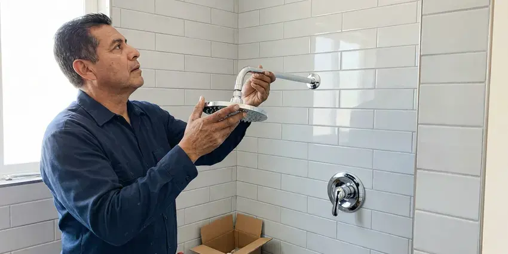

Bathtub Faucet Replacement in Murrieta, CA
FKM Plumbing offers prompt and professional bathtub faucet replacement services across Murrieta, CA, making sure your bathroom is fully functional.
- Upfront Pricing
- Licensed Plumbers
- Limited Tile Disruption
- Guaranteed Workmanship

Get Your New Bathtub Faucet Installed in Murrieta, CA.
We replace your tub faucet with little mess and a clear upfront price.
Bathtub Faucet Replacement and Valve Upgrades in Murrieta, CA
FKM Plumbing finds that most tub faucet problems trace back to worn cartridges and seats. Hard water shortens the life of tankless units, valves, and appliances, which is why many homes in Southern California install softeners or scale filters. Constant dripping, stiff handles and scalding swings all point to a valve that needs attention, and we fix it right so your tub fills at the temperature you choose.
Our expertise includes:
- Careful removal of old faucet units.
- Careful leak detection and repair
- All major faucet brands installed

Additional Bathroom Plumbing Services in Murrieta, CA
From toilets to showers, our bathroom plumbing team in Murrieta, CA repairs, installs, and replaces every fixture with clean, code-compliant work.


Customers
Why Choose FKM Plumbing for Bathtub Faucet Replacement in Murrieta, CA?
Choosing the right professionals for bathtub faucet replacement is important for the longevity and performance of your plumbing system. Our team understands the plumbing challenges in Murrieta, from mineral deposits to older home plumbing.
- Tile Care, We use access panels and trim plates to limit tile damage.
- Skilled Technicians, Our team is trained and experienced in all types of bathtub faucet replacement, ensuring a clean and efficient installation.
- Right Parts, We identify the exact valve so replacement parts fit the first time.
Citywide Coverage
FKM Plumbing is proud to serve every neighborhood in Murrieta for your bathtub faucet replacement needs. No matter where you're located, our team is ready to provide prompt and professional service.
Experienced Team
The FKM Plumbing team is continually trained on the latest plumbing technologies and fixture types, so your bathtub faucet replacement is performed with the highest level of skill and care.
Safety-First Approach
Safety is our top priority during every bathtub faucet replacement, ensuring all work follows Southern California plumbing codes. We take precautions to protect your home and our technicians.
Trusted Certified Murrieta Plumbing Services Professionals
At FKM Plumbing, we take pride in providing certified plumbing services throughout Murrieta, CA. Backed by recognized industry credentials, our experienced plumbers combine technical skill with genuine customer care. Whether it is repair, installation, or maintenance, we follow strict safety and quality standards to deliver long-lasting results you can trust.
Call Us Now PHCC Plumbing Contractor Recognition
PHCC Plumbing Contractor Recognition Better Business Bureau (BBB) Accreditation
Better Business Bureau (BBB) Accreditation Angi Certified Pro
Angi Certified Pro ISO 9001 Quality Management Certification
ISO 9001 Quality Management CertificationDependable Bathtub Faucet Replacement Services in Murrieta, CA
Emergency Tub Faucet Leak Service in Murrieta
A broken stem or handle can leave water running nonstop into the tub. If you cannot shut it off at the valve stops, turn off the main and call us. We prioritize runaway faucets and carry common stems and cartridges. Quick action prevents wasted water and high bills.

Cartridge and Stem Replacement in Murrieta, CA
Many dripping tub faucets just need a new cartridge or stem and seat. We replace Moen 1222 and 1225 cartridges, Delta single-handle cartridges, and two-handle stems for older brands. We also clean scale from the valve body so the new part seals. This often costs much less than a full valve swap.
Moen Bathtub Faucet Replacement in Murrieta
Moen faucets are a common fixture in many Murrieta homes, offering a blend of style and durability. When a Moen bathtub faucet needs replacing due to age, damage, or a desire for a new look, our skilled plumbers are ready. We handle all Moen models, ensuring that your new faucet functions perfectly and fits seamlessly with your bathroom's style.
Thermostatic and Pressure-Balancing Faucets in Murrieta, CA
For better comfort and safety, many homeowners opt for thermostatic or pressure-balancing bathtub faucets. These advanced fixtures maintain a consistent water temperature and prevent scalding. Our team has the expertise to correctly install these specialized faucets, making sure they function perfectly within your plumbing system in Murrieta, CA.
Freestanding and Deck-Mount Tub Filler Installation in Murrieta
Freestanding tubs need floor-mount fillers with supply lines run through the slab or floor. Deck-mount fillers sit on the tub rim or surround. We plan the rough-in, set the valve and secure the filler so it does not wobble. These installs usually happen during larger bathroom remodels.
Tub Spout Replacement in Murrieta
Tub spouts crack, corrode and lose their diverter function over time. We match slip-on or threaded spouts to your pipe and replace them with a correct-length nipple when needed. A new spout stops water from shooting out while the shower is on. It is a fast fix with a big improvement in function.
Three-Handle to Single-Handle Valve Conversion in Murrieta
Many older homes still have three-handle tub and shower faucets. We remove the old valve, install a modern single-handle pressure-balance valve, and cover the old holes with a large remodel plate. This upgrade adds scald protection and simplifies cleaning. Tile damage is usually limited to what the trim plate covers.

Delta Bathtub Faucet Replacement in Murrieta, CA
Delta is a popular brand known for its innovative designs and reliable performance. If your Delta bathtub faucet is beyond repair or you're upgrading to a newer model, FKM Plumbing offers expert replacement services. We have experience with Delta's various lines, from their standard models to their more complex thermostatic units, delivering a correct and leak-free installation anywhere in Murrieta, CA.
Trusted Bathtub Faucet Replacement Near Me in Murrieta, CA
When the tub faucet will not stop dripping, you want a plumber close by who knows tub valves. Our team works in Murrieta every day and stocks the most common cartridges and trim kits. That means fewer return trips.
Hard water shortens the life of tankless units, valves, and appliances, which is why many homes in Southern California add softeners or scale filters. We know which valve brands hold up best under local conditions and will recommend durable replacements that suit your bathroom. Every job ends with a full test of hot, cold and shower settings.
FKM Plumbing at a Glance
- Licensed and insured plumbers serving Murrieta, CA
- 24/7 emergency service with same-day scheduling
- Upfront, flat-rate pricing before work begins
- 4.8-star rated by 754+ Southern California customers
Murrieta Map
Murrieta Information
- Population
- 111,878
- Area codes
- 951/760/909
- Service area
- Murrieta and communities within 40 miles
- Nearby
- Temecula, Menifee, Lake Elsinore, Perris
Hard water shortens the life of tankless units, valves, and appliances, which is why many homes in Southern California add softeners or scale filters. Worn tub cartridges and valve seats drip, so replacing a dripping bathtub faucet in a Murrieta, CA home saves water and prevents mineral stains on the tub.
Expert Services
Trust our professionals for reliable FKM Plumbing solutions in Murrieta, CA.
Our Specialized Plumbing Services in Murrieta, CA
At FKM Plumbing, we provide a complete range of plumbing services across Murrieta, CA. From leak detection to full system installations, our team ensures fast, precise, and affordable service for both residential and commercial properties. Explore our core services below:


How Our Bathtub Faucet Replacement Process Works in Murrieta, CA
We follow a clear, step-by-step approach to make sure your new bathtub faucet is installed correctly and functions perfectly.
Request a Quote
Call (213) 871-0701 and describe your tub faucet and the problem. Photos of the handles and spout help us bring the right parts.
Identify the Valve
We open the trim to identify the valve brand and condition. Then we explain repair or replacement options with upfront pricing.
Replace and Test
We install the new parts or valve, seal the trim and set the temperature limit. Every function is tested before we head out.
Frequently Asked Questions About Bathtub Faucet Replacement in Murrieta
The cost for bathtub faucet replacement in Murrieta, CA typically ranges from $250 to $600, depending on the type of faucet, complexity of the installation, and any necessary plumbing adjustments. This range includes labor and a standard replacement faucet. We provide a detailed estimate before any work begins.
Yes. Current code requires pressure-balance or thermostatic control on tub and shower valves. We install compliant valves and set the limit stop.
Usually a worn cartridge, washer or valve seat is to blame. Hard water speeds up that wear. Replacing the cartridge or stem typically stops it.
Spout and trim swaps take about an hour. Cartridge replacement takes one to two hours, and a full valve replacement may take between three and six hours.
Spout and handle swaps are reasonable DIY projects. In-wall valve replacement involves soldering or crimping and is best done by a plumber.
We install and service all major bathtub faucet brands, including Moen, Delta, Kohler, American Standard, Pfister, and many others. Our technicians are familiar with the specific installation requirements and components of various manufacturers.
Yes, FKM Plumbing stands behind our work. We offer a warranty on our labor for bathtub faucet replacements. Additionally, many of the high-quality faucets we install come with their own manufacturer's warranty, which we will help you sort out.
Regular cleaning to prevent mineral buildup and avoiding overtightening handles can extend a faucet's life. If you have hard water, installing a whole-house water softener can significantly reduce wear and tear on all your plumbing fixtures, including bathtub faucets.
What People Are Saying About Our Plumbing Experts?

Sofia M.
Two new toilets installed in one visit, no mess left behind, and the tech even adjusted a faucet he noticed was dripping. Fair pricing and really friendly.
Toilet Installation · Menifee, CALaura S.
I scheduled a water heater replacement, and the team made the process smooth and affordable. The new unit works perfectly, and they cleaned up after completing the job.
Water Heater Replacement · Lake Elsinore, CA
Robert G.
The trenchless sewer replacement saved our front yard. They walked us through the camera inspection footage first so we knew exactly what we were paying for.
Sewer Line Replacement · Hemet, CA
Daniel K.
A pipe burst at 11 pm and they actually answered. The plumber showed up within the hour, shut everything down, and had us back to normal the next morning. Could not ask for more.
Emergency Plumbing · Temecula, CA
Emily R.
I called FKM Plumbing for plumbing repair, and the technician was fast, polite, and thorough. They explained the problem clearly and fixed it the same day. I will definitely hire them again. Highly recommended!
Plumbing Repair · Lake Elsinore, CAJames P.
Our commercial plumbing system had a leak under the sink, and FKM Plumbing handled it professionally. The plumbers arrived quickly and restored everything without disruption to our customers.
Commercial Plumbing · Hemet, CA